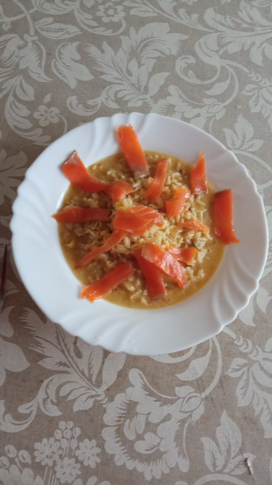

IMAGINE THIS IS THE PROPER RECIPE
Trout risotto

Ingredients
- Risotto rice
- Shallots
- Smoked trout
- Leek
- Butter
- Strong grated cheese
- Veggie broth
- Dill
- Pepper
- White wine
How to
-
Chop the onions and the leek and add them to a pan on medium heat
with melted butter
- While the onions and the leek cook, boil some broth
-
Once the onions are transparent, add you rice, your spices and a bit
of wine, and let the alcohol cook off
-
After the wine boils, start adding the hot broth little by little
and let the rice cook while stirring
-
When it is almost done, add a bit more butter and a LOT of your
cheese of choice
-
Serve it and then add the smoked trout, preferably on small dices
- Eat!